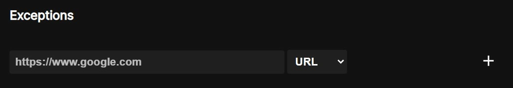

Frequently Asked Questions
Why LibRedirect?
Normally, you would watch YouTube videos through youtube.com,
problem is, everything you watch is tied to your Google Account. Even if you don't use an account, your IP address is still visible to their server.
Even if you use Tor, you still have JavaScript
enabled, which can gather all sorts of creepy information about your browser and system - just go to deviceinfo.me
or amiunique.org
and see for yourself!
So, why not disable JavaScript? Great idea! Now YouTube is broken, as it requires JavaScript to function?
Fortunately, there's a way to make a script that scrapes data off of youtube.com and presents it in a nice simple webpage that doesn't require JavaScript. People have done this already! There's a project called Invidious that doesn't require JavaScript for you to watch YouTube videos - e.g. https://yewtu.be/watch?v=dQw4w9WgXcQ.
Invidious and others are called alternative frontends,
where you're still using YouTube (or another website) but with a different interface, in this case a more privacy-friendly one.
Changing links every time from e.g.
https://youtube.com/watch?v=dQw4w9WgXcQ
→
https://yewtu.be/watch?v=dQw4w9WgXcQ
is an inconvenient process and best to be automated, so we did that!
LibRedirect's main functionality is to make the use of those frontends easier by automating it. It makes life much easier and privacy more convenient.
Suggest a frontend
Requirements:
- Open source
- Enhances privacy over main site
- Can be self-hosted, so it's decentralised
Good examples:
Bad examples:
- PixivMoe - Wasn't meant to be an alternative private frontend in the first place.
- Imginn - Wasn't meant to be an alternative private frontend in the first place.
- Startpage - There's already an extension for it.
- Old Reddit - There's already an extension for it.
- Pinafore - A full featured web app for Mastodon, not a frontend.
- Soju - A website that gives you samples of Spotify songs, not a frontend.
- PornInvidious - See discussion.
Why fork Privacy Redirect?
Privacy Redirect hasn't been maintained since 6 December 2021. Many instances are hard-coded. Some should be removed as they've since gone offline and many others should be added. Many pull requests were left pending and waiting, so we stepped in. Later, we started improving it further by adding new features and frontends.
Even though we forked from Privacy Redirect, LibRedirect is now independent, as it is ahead of the main project with several improvements and new features.
Why all those permissions?
Let's examine them one by one:
- webRequest,
webRequestBlocking: To blockhttprequests or redirect them. - storage: To save LibRedirect's settings permanently.
- Clipboard.writeText: To write the original link to the clipboard while using Copy Raw. LibRedirect does not read the data in your clipboard.
- menus: To add LibRedirect buttons to the Context Menus.
- bookmarks (optional): To add the same Context Menus to Bookmarks too.
- all_urls: The targets can be static, but the Switch Instance and Copy Raw buttons require access to the instances' URLs which are custom to each user.
Where the hell are those instances coming from?
Almost every frontend project has a list of public instances. We fetch those lists using an automated Python script, which gets triggered daily. We neither intercept nor modify the lists outside of removing invalid URLs.
Hence, if you are not comfortable with certain instances' policies or have found malicious instances, please report them to the project maintainers to remove them from their lists. We will then update our lists manually to make sure those instances are removed, only after you contact us via our Matrix room or by Mastodon.
Embeds aren't working, why?
- The Webpage you are trying to use may have implemented CSP (Content Security Policy) which prevents Libredirect from replacing them.
- It could be broken because of Top layer in HTML element of the embed that maybe a Custom Video Player or Ads.
- Some instances doesn't support embeds at all or displaced them explicitly.
They are disabled by default to not help website in creating a fingerprint on you.
Chrome Web Store?
We can't publish LibRedirect to the Chrome Web Store as it requires Manifest v3, which removed essential features that LibRedirect needs. However, you can still install it manually.
Why can't LibRedirect migrate to Manifest V3?
There are two ways to redirect URLs: webRequest (Manifest V2) and declarativeNetRequest (Manifest V3). According to mdn, declarativeNetRequest evaluates network requests in the browser itself, making it more performant, but it lacks flexibility.
There are two places where webRequest works and declarativeNetRequest doesn't:
- Selecting a random instance from a set of favorite instances for each new HTTP request. In declarativeNetRequest, the user can only redirect to a single instance that is hard-coded in the Rules Table.
- Sending a separate HTTP request to get some information before redirecting to the new URL (e.g., getting lat/lon from Nominatim when redirecting from Google Maps). In declarativeNetRequest, there's no "code" that can be executed to make a separate HTTP request.
Privacy Policy
- Data collected : Nothing.
- All URL redirections work locally, except for OpenStreetMap reverse geocoding, done via the OSM Nomantim API.
- By default, the list of instances is fetched from GitHub. Alternatively, it may be fetched from Codeberg or not at all.
Documentation
Keyboard shortcuts
LibRedirect offers the following keyboard shortcuts for easier access:
- Shift+Alt+L - To switch to a different instance from the one you're currently in.
- Shift+Alt+C - Copies the original link (e.g., copies the original Twitter link when you're using Nitter).
- Shift+Alt+O - Redirects to the original site from the frontend.
- Shift+Alt+R - Redirects to the frontend from the original site.
Some shortcuts may or may not work in certain browsers such as Microsoft Edge.
Preferred instances
To go from the current instance you're using to your preferred or favourite instance, it is explained as follows. For example, assume someone shares with you a Piped link for the instance piped.mha.fi, but you want to use your favourite instance, piped.video. It would be a hassle to change the domain manually.
To avoid that hassle, you can redirect to your favourite instance with just two clicks! Just open the popup menu and click the reload button near the frontend. Voila! You have reached your destination.
Note: Switching to your favourite instance by clicking the reload button works regardless of whether redirection for that frontend is turned off or on.
Note: Some frontends may not have this feature, but the most popular ones do.
Exceptions

Exceptions will exclude certain sites from being redirected. When you add a site to the exceptions list, it will not redirect as it is excluded from redirection. This exceptions list is an allowlist, not a blocklist.
Cloudflare
You might see some instances marked with Cloudflare. This indicates that an instance is using Cloudflare as its CDN. Cloudflare basically decrypts the data between you and the instance to compress it and send it faster. in other words, Cloudflare can see your data in plain text, even with HTTPS, so use these instances carefully.
Setting LibRedirect as a search engine in Chromium
Type in your address bar: chrome://settings/searchEngines. Under Site search, click Add
and type:
Search engine:
LibRedirect
Shortcut:
libredirect
URL with %s in place of query:
https://search.libredirect.invalid/?q=%s
Setting LibRedirect as a search engine in Firefox Android
Go to Settings => Search => Default search engine => Add search engine:
Search engine name:
LibRedirect
Search string URL:
https://libredirect.manerakai.com/?q=%s
Install for Chromium browsers
Applies to Chrome, Brave, Edge, Vivaldi, Opera.
Windows
1. Go to Extension Manager, and enable developer mode.
2. Download and run your browser's registry file: chrome.reg, brave.reg, edge.reg
or vivaldi.reg.
Note:
Opera doesn't need a registry file.
3. Restart your browser.
4. Right click on this .crx file, and click Save Link As... to save it: libredirect-3.4.0.crx.
5. Go to Extension Manager again, and drag and drop the .crx file.
macOS
1. Download the latest zip file libredirect-3.4.0.zip.
2. Unzip it with Auto detect subfolder.
3. Go to Extension Manager, and enable developer mode.
4. Click Load unpacked, and select and open libredirect-3.4.0/src/.
Linux, ChromeOS
1. Right click on this .crx file, and click Save Link As... to save it: libredirect-3.4.0.crx.
2. Go to Extension Manager, and enable developer mode.
3. Refresh the page.
4. Drag and drop the .crx file.